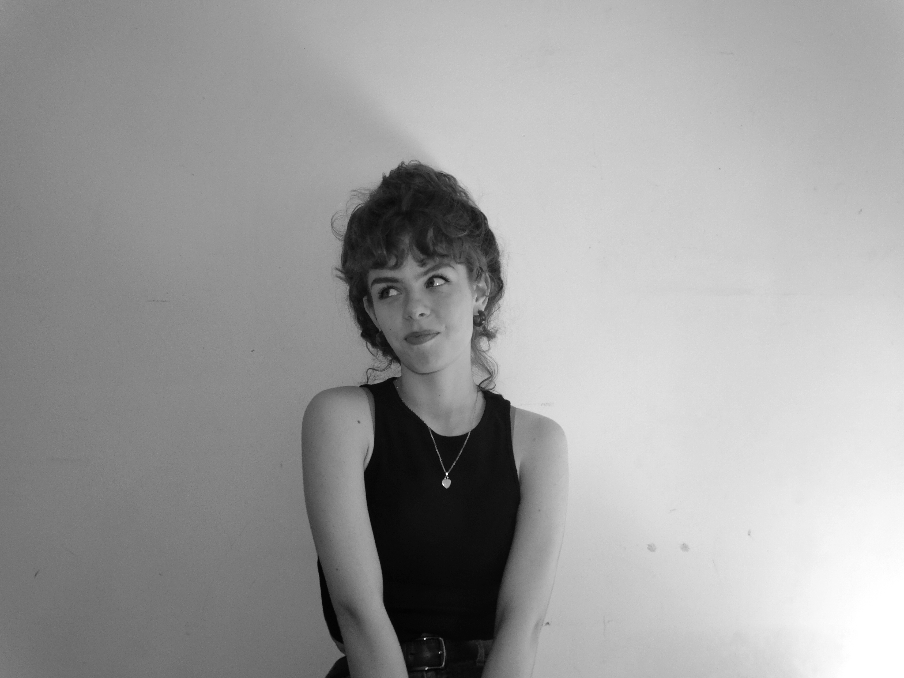

My name is Kateryna Khrapak. Born in Khmelnytskyi, Ukraine in 2005, I now study at LCC International University in Klaipeda, Lithuania.

My major is Contemporary Communications. I try to explore all the spheres of the major includding journalism, public relations, web design amd many more
Besides studying I actively participate in youth exange programms, congresses and projects.
Follow my jourmey!